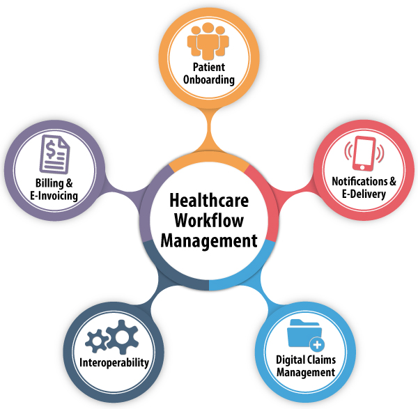
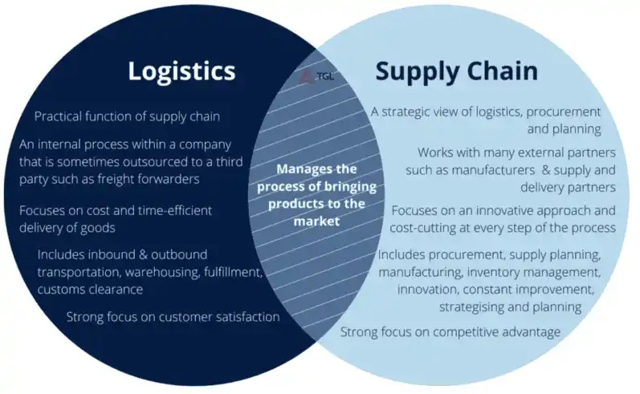

Consultancy
Eight years advising healthcare, supply-chain and financial-services enterprises through regulatory and technical transformation.
The context
During more than eight years in consulting roles with Cognizant (2009–2016) and Capgemini (2016–2018), I worked with large enterprises across healthcare, supply chain and financial services, where middleware and integration platforms underpinned mission-critical operations.
Healthcare: regulatory-critical integration

Add photoimages/consulting-healthcare.jpgOptional: recognition or certificate from the healthcare engagements
Supported UnitedHealthcare, WellPoint and CareCentrix on clearinghouse and integration systems handling enrollment, claims processing, remittance and settlement, through two federally mandated transitions: the Health Insurance Portability and Accountability Act (HIPAA) 4010-to-5010 EDI migration[1], and the switch to the International Classification of Diseases, 10th Revision (ICD-10)[2].
Both were compliance deadlines set in law by the U.S. Department of Health and Human Services. Inaccurate mappings or missed deadlines could trigger claims rejection and regulatory non-compliance across the industry. Core tools: IBM WebSphere Transformation Extender (WTX) and IBM MQ.
UPS: global logistics integration layer

Add photoimages/consulting-ups.jpgOptional: recognition or reference from the UPS engagement
Middleware integration supporting UPS's commercial supply-chain systems[3]: shared infrastructure connecting data across a global logistics network and major clients including Apple, Nike and Costco, alongside healthcare-related logistics requiring strong governance, traceability and reliability.
Needed: optional: UPS-side reference or LinkedIn recommendationSynchrony: cloud and platform modernization
Engaged through Capgemini on the Synchrony Financial account[4], I led modernization of enterprise integration platforms, migrating more than 300 middleware packages and web services off legacy Solaris onto converged-cloud and Pivotal Cloud Foundry platforms, and designed high-volume integration services processing approximately 150 million transactions per day.
Outcome
The Synchrony engagement led to an invitation to join as a full-time employee, evidence of sustained client trust that carried directly into the caching-platform work described under Invention and Innovation.
References
- U.S. HHS — enforcement discretion regarding compliance with HIPAA 5010 standards
https://www.hhs.gov/guidance/document/enforcement-discretion-regarding-compliance-just-released-hipaa-standards - CMS final rule setting the 1 October 2015 ICD-10 compliance date
https://www.cbhc.org/archive/cms-final-rule-sets-icd-10-compliance-date-at-oct-1-2015/page/46/ - UPS — company facts and global scale
https://www.ups.com/us/en/about/facts.page - Synchrony Financial — fact sheet
https://www.synchrony.com/s/fact-sheet.html